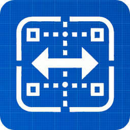

Constrained Layout
Source Code
A flexible Flutter layout allowing to position widgets by declaring relations between them
Add to your project with
flutter pub add constrained_layout
or
Try it out now in the playground app